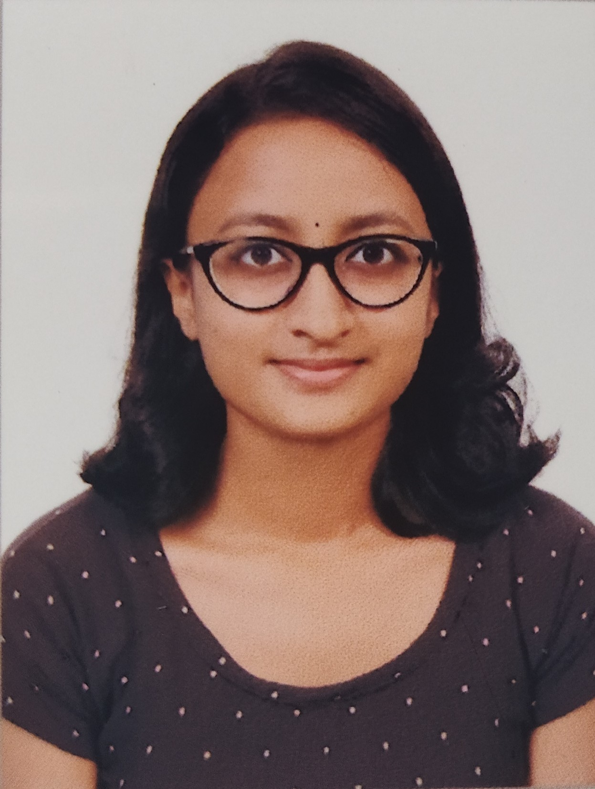

Archana Sasidharan

Summary
Resourceful CSE graduate with strong problem-solving abilities seeking entry-level opportunities to apply academic knowledge and develop new skills.
Education
LBS College of Engineering Kasaragod
- Bachelor of Technology in Computer Science and Engineering(2019-2023)
- Cgpa: 7.24
Moothedath Higher Secondary School
- Higher Secondary Education(2015-2017)
- Percentage: 90.67%
Moothedath Higher Secondary School
- High School Education(2014-2015)
- Percentage: 96.57%
Academic Project
Dream 11 Score Prediction
- Created a Web application for predicting the Dream11 score of a player in a 4-person team
- Python and Machine Learning techniques were used for developing the predictive model.
- Used the predicted score to create a team in Dream 11 website.
- It was found that this model increased the chances of winning in the Dream11 fantasy sports platform.
- Front end tools used were HTML5, CSS3, JS and the database was in SQLite and the framework used was Django.
Pain and Palliative care Management System
- Created a web application for easy access to pain and palliative care services and donations in a 4-person team.
- Replaced the manual file based database with a computerized website.
- Languages used as front end were HTML5, CSS3, JS and the database used was MongoDB.
Skills
- C programming
- Python programming
- MySQL
- HTML
- CSS
Achievements
- Volunteered in college level Tech fest.
- Participated in various co-curricular activities at college level.
- Attended workshops on Artificial Intelligence and Data Science, and Ethical Hacking.
- Secured prizes for various creative content writing competitions in School ( Zonal Level).
Others
Hobbies
Contact